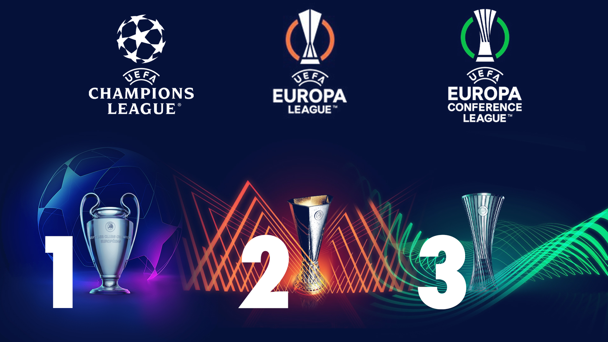

Elk jaar strijden de beste clubs uit Europa in drie prestigieuze competities: de Champions League, de
Europa League en de Conference League. In de Champions League nemen de kampioenen en topteams van de
sterkste competities het tegen elkaar op, met een adembenemende finale als hoogtepunt. De Europa League
biedt een podium aan sterke teams die net onder de top meedoen, met spannende wedstrijden en verrassende
resultaten. De Conference League, gelanceerd in 2021, geeft meer clubs de kans om zich op het Europese
toneel te laten zien en dromen waar te maken. Samen vormen deze competities het kloppende hart van het
Europese clubvoetbal, waar miljoenen fans wereldwijd elke wedstrijd meebeleven.

Kwalificeren
Clubs kunnen zich voor de Europese competities kwalificeren via hun prestaties in hun nationale
competities en bekertoernooien. De Champions League is toegankelijk voor de topteams uit elke
competitie, waarbij de hoogst geplaatste clubs zich direct plaatsen en andere teams via voorrondes
moeten strijden voor een plek in de groepsfase. De Europa League is bestemd voor teams die net onder de
top eindigen en voor bekerwinnaars, afhankelijk van de ranglijst van hun nationale competitie. Voor de
Conference League, het derde Europese toernooi, zijn er extra kwalificatiemogelijkheden, wat kleinere
clubs een kans biedt om Europa in te gaan. Elk toernooi heeft specifieke kwalificatie-eisen die per
competitie kunnen variëren, waardoor elk seizoen opnieuw spannend is voor clubs en fans.